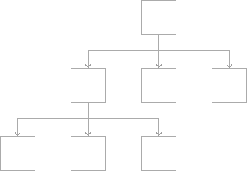

Navigation 导航


用户往往意识不到一个应用的导航，除非它没有达到他们的预期。你的工作就是实现一种能够支持应用结构和目的的导航，并且让人们注意到到导航的存在。导航应该让人觉得自然和熟悉，并且不应该主导界面或者抢走内容的风头。在iOS，主要有三种导航结构。
分层导航（Hierarchical navigation.）。在每屏都做一次选择，直到你到达目标位置。要想到达另外的目标位置，你必须原路返回一些层级或是从头开始重新选择。原生应用设置（Settings）和邮件（Mail）就是采用这种导航结构。


扁平导航（Flat navigation.）。在不同的内容类别间切换。原生应用音乐（Music）和App Store就是采用这种导航结构。


内容驱动或是体验驱动式导航（Content-driven or experience-driven navigation.）。在内容中自由地转换，或是内容定义导航。游戏、阅读以及其它沉浸式应用一般都采用这种导航结构。


有的应用结合了多种导航形式。比如，采用了扁平导航的应用也可能在每个类别之内使用层级导航。
总是提供清晰的路径（Always provide a clear path. ）。用户应该一直知道他在应用的什么位置以及如何去往下一个目标位置。除了要有清楚的导航形式，还应该确保对象间的路径是合理的、符合预期的并且容追溯的。一般来说，为用户提供到达某一屏的唯一路径。如果他们需要在非常多的情景下看到某一屏幕的内容，那么考虑采用操作列表、警告框、浮出层或是模态视图的形式展示这些内容。了解更多内容，请参阅Action Sheets,Alerts,Popovers, 和Modality。
设计一个能够快速简单地访问内容的信息结构（Design an information structure that makes it fast and easy to get to content. ）。合理地组织你的信息结构，保证它只用最少次数的点击、横扫和屏幕间跳转就能访问相应的内容。
使用触摸手势来制造流畅感（Use touch gestures to create fluidity. ）。让用户能轻松地在界面内跳转，而感受不到阻力。比如，你可以让用户在屏幕边界右滑，而返回到上一屏。
使用标准的导航组件（Use standard navigation components. ）。可能时，使用标准的导航控件比如页面控件、标签栏、分段控件、表格视图、集合视图和拆分视图。用户已经熟悉了这些控件，他们很自然地就知道如何玩转你的应用。
使用导航栏访问分层内容（Use a navigation bar to traverse a hierarchy of data.）。导航栏内的标题栏能够说明当前的层级位置，使用返回按钮能够轻易地回到上一个位置。了解更多指导，请参阅Navigation Bars。
使用标签栏来展示内容或功能相似的类别（Use a tab bar to present peer categories of content or functionality.）。标签栏让用户能够快速简单地在类别中切换自如，而不受当前位置的限制。了解更多指导，请参阅Tab Bars。
使用多页面展示同类型的内容时请使用页面控件（Use a page control when you have multiple pages of the same type of content. ）。页面控件能够清楚地表示总页数，以及当前页的位置。天气（Weather）应用就使用了页面控件来表示不同地理位置的天气页面。了解更多指导，请参阅Page Controls。

TIP
分段控件和工具栏不具备导航功能。使用分段控件能够组织信息放入不同的类别。使用工具栏为当前内容提供交互控件。了解这些元素的更多信息，请参阅Segmented Controls和Toolbars。